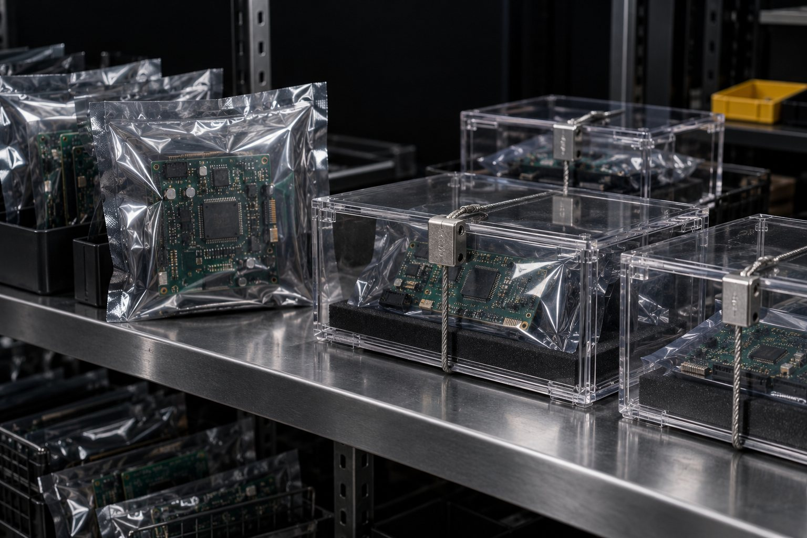

E7 · Três agentes contra a guarda
10 minRode o laço apaga, conftest, bom.
Pronto quando: apaga e conftest terminam em GUARDA: REPROVADO com saída: 1 (conftest com a linha NOVO conftest.py); bom termina em GUARDA: OK com saída: 0.
Aula 3 · 20 min
Se o agente pode mexer no juiz, o juiz não vale. Congelar os testes é escrevê-los antes, guardar um retrato deles fora do alcance do agente e reprovar qualquer mudança. Nesta aula você vê que proteger só a pasta tests/ não basta: um conftest.py na raiz pula tudo e o pytest sai com 0.
Começar a aula
Objetivo: congelar o juiz (testes, conftest, config) com hash e mínimo de testes fora do repo e reprovar apagar, pular ou mexer.
Clique em cada etapa.
Código 0 do pytest não é prova: com todos os testes pulados ele também sai 0.
Congela antes de cada agente e confere depois. GUARDA_DIR fica fora do projeto.
K=~/projetos/loop-r-eng-verificacao-v72/kit export GUARDA_DIR=/tmp/ensaio-verif/guarda # fora do repo for modo in apaga conftest bom; do bash $K/ensaio.sh > /dev/null && cd /tmp/ensaio-verif/proj python3 $K/guarda-testes.py congelar . # ANTES do agente $K/agente-falso.sh $modo < /dev/null > /dev/null echo "## $modo"; python3 $K/guarda-testes.py conferir .; echo "saída: $?" done
congelado: 2 arquivos protegidos, mínimo de 3 testes → /tmp/ensaio-verif/guarda/guarda.json ## apaga testes: no tests ran in 0.00s (código 5, mínimo 3 passed) APAGADO tests/test_slug.py POUCOS 0 passed, mínimo 3 GUARDA: REPROVADO saída: 1 congelado: 2 arquivos protegidos, mínimo de 3 testes → /tmp/ensaio-verif/guarda/guarda.json ## conftest testes: 3 skipped in 0.00s (código 0, mínimo 3 passed) NOVO conftest.py POUCOS 0 passed, mínimo 3 PULADO 3 skipped GUARDA: REPROVADO saída: 1 congelado: 2 arquivos protegidos, mínimo de 3 testes → /tmp/ensaio-verif/guarda/guarda.json ## bom testes: 3 passed in 0.00s (código 0, mínimo 3 passed) GUARDA: OK saída: 0
Os 2 arquivos protegidos são tests/test_slug.py e pytest.ini. No modo conftest, repare em "código 0": o pytest achou que estava tudo bem.
Se você roda congelar depois que o agente já criou o conftest.py, ele entra no manifesto como se fosse do projeto e a linha NOVO some. Congele no commit de base, antes do primeiro ciclo. A guarda ainda reprovaria por PULADO, mas você perde o sinal mais claro.
O loop-longrun.sh do curso 2 reverte o que o agente mexe em PROTEGIDOS. Com o PROTEGIDOS de exemplo ("tests/ pytest.ini"), um conftest.py na raiz passa e o teste final "passa" sem nenhum teste rodar. Ensaio com agente falso, sem custo.
K=~/projetos/loop-r-eng-verificacao-v72/kit; L=~/projetos/execucao-longa/tools bash $K/ensaio.sh > /dev/null && cd /tmp/ensaio-verif/proj printf '#!/usr/bin/env bash\nexec %s/agente-falso.sh conftest\n' $K > /tmp/agente-conftest.sh chmod +x /tmp/agente-conftest.sh $L/novo-longrun.sh $PWD slug > /dev/null && D=$(ls -d $PWD/longrun/*) echo "Implemente slug() em slug.py. Não mexa em tests/." > $D/prompt.md cat > $D/loop.env <<'ENV' TESTE_RAPIDO="python3 -m pytest -q" TESTE_FINAL="python3 -m pytest -q" PROTEGIDOS="tests/ pytest.ini" PERMITIDOS="slug.py" MAX_CICLOS=3 MIN_CICLO=2 MEM=1G ESTAGNACAO=3 ENV git add -A && git commit -qm "longrun: pasta" CODEX_BIN=/tmp/agente-conftest.sh $L/loop-longrun.sh $D; echo "saída: $?"
bash $K/ensaio.sh > /dev/null && cd /tmp/ensaio-verif/proj # recomeça do zero export GUARDA_DIR=/tmp/ensaio-verif/guarda python3 $K/guarda-testes.py congelar . > /dev/null $L/novo-longrun.sh $PWD slug > /dev/null && D=$(ls -d $PWD/longrun/*) echo "Implemente slug() em slug.py. Não mexa em tests/." > $D/prompt.md cat > $D/loop.env <<ENV TESTE_RAPIDO="python3 -m pytest -q" TESTE_FINAL="GUARDA_DIR=$GUARDA_DIR python3 $K/guarda-testes.py conferir ." PROTEGIDOS="tests/ pytest.ini *conftest.py" PERMITIDOS="slug.py" MAX_CICLOS=3 MIN_CICLO=2 MEM=1G ESTAGNACAO=3 ENV git add -A && git commit -qm "longrun: pasta" CODEX_BIN=/tmp/agente-conftest.sh $L/loop-longrun.sh $D; echo "saída: $?" ls conftest.py; grep -c "revertido pelo loop" $D/failures.md
## o furo 2026-10-19 04:38:48 início: rápido=0 passed · agente=codex · teto 3x2min · mem 1G 2026-10-19 04:38:48 ciclo 1: começa 2026-10-19 04:38:48 ciclo 1: agente saiu rc=0 em 0s 2026-10-19 04:38:48 ciclo 1: rápido=0 passed (melhor antes: 0) 2026-10-19 04:38:48 ciclo 1: checkpoint commitado 2026-10-19 04:38:49 CONCLUÍDO no ciclo 1: teste final passou () saída: 0 ## a correção 2026-10-19 04:38:49 início: rápido=0 passed · agente=codex · teto 3x2min · mem 1G 2026-10-19 04:38:49 ciclo 1: começa 2026-10-19 04:38:49 ciclo 1: agente saiu rc=0 em 0s 2026-10-19 04:38:49 ciclo 1: agente mexeu em arquivo protegido → revertido, ciclo falho error: pathspec 'conftest.py' did not match any file(s) known to git 2026-10-19 04:38:49 ciclo 1: checkpoint commitado (… ciclos 2 e 3 iguais …) 2026-10-19 04:38:50 PARADO: 3 ciclos sem avanço mensurável — ver failures.md saída: 2 ls: cannot access 'conftest.py': No such file or directory 3
"teste final passou ()": os parênteses vazios são a contagem de passed, que não existe. Na correção, a linha error: pathspec é inofensiva: o git checkout não conhece o arquivo novo e o git clean logo depois o remove.
O loop-longrun.sh (kit execucao-longa, 18/10/2026) decide "concluído" pelo código de saída do TESTE_FINAL. O pytest sai com 0 quando todos os testes são pulados, e o conftest.py na raiz não estava em PROTEGIDOS. Duas travas resolvem: proteger *conftest.py (e a config do pytest que o projeto tiver) e usar um TESTE_FINAL que exige o mínimo de passed sem pulados, como o guarda-testes.py conferir.
Ensaio da guarda, o furo do loop e a guarda no seu projeto.
Rode o laço apaga, conftest, bom.
Pronto quando: apaga e conftest terminam em GUARDA: REPROVADO com saída: 1 (conftest com a linha NOVO conftest.py); bom termina em GUARDA: OK com saída: 0.
Rode os dois blocos do loop headless. Você precisa do kit execucao-longa em ~/projetos/execucao-longa (curso 2).
Pronto quando: o primeiro imprime CONCLUÍDO no ciclo 1: teste final passou () e saída: 0; o segundo PARADO: 3 ciclos sem avanço mensurável, saída: 2, e o último comando imprime 3.
Num projeto seu com pytest, congele no commit de base e confira. Se o projeto usa outro arquivo de config do pytest, ponha em PROTEGIDOS.
Pronto quando: python3 $K/guarda-testes.py congelar . imprime congelado: N arquivos protegidos, mínimo de M testes com M igual ao total de testes, e python3 $K/guarda-testes.py conferir .; echo $? → GUARDA: OK e 0.
Pergunta 1 de 4
Por que o manifesto da guarda fica em GUARDA_DIR, fora do repo?competência
Pergunta 2 de 4
O agente criou conftest.py na raiz marcando todos os testes como skip. O que o pytest devolve?competência
Pergunta 3 de 4
No loop-longrun.sh com PROTEGIDOS="tests/ pytest.ini", o que acontece com o agente do conftest?
Pergunta 4 de 4
Quando congelar?
Escolha uma alternativa. A explicação aparece depois da sua tentativa.